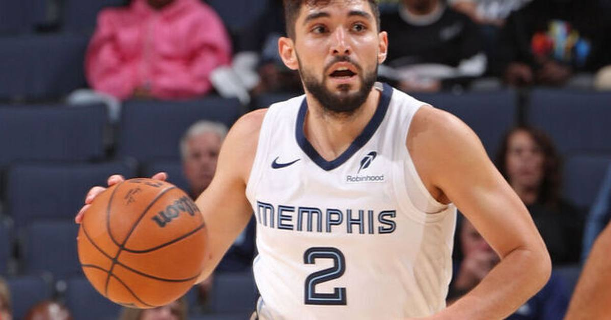

Ty Jerome Drops Career-High 45, Shatters Grizzlies' Season-Opener Record
Stepping into the starting point guard job after the Ja Morant trade, Ty Jerome hung a career-high 45 on the Jazz — breaking Morant's franchise season-opener record and becoming the first Grizzly ever with 45/5/5 on 65%+ shooting.

The post–Ja Morant era in Memphis started with someone else's name in the record book.
Ty Jerome torched the Utah Jazz for a career-high 45 points on 17-of-25 shooting Wednesday night, leading the Grizzlies to a 123-103 season-opening win at FedExForum — and breaking Morant's franchise record of 44 for points in a season opener, set against San Antonio in 2020.
The new point guard announces himself
Morant was dealt to Portland in the offseason, and Jerome — a 29-year-old journeyman who topped out at 33 points for Cleveland against Philadelphia in January 2025 — stepped into the starting job and never gave the ball up. He scored Memphis' first two baskets, dropped 13 in the opening quarter, and got a standing ovation walking off in the final minute.
He also became the first player in Grizzlies history to record at least 45 points, five rebounds and five assists while shooting better than 65% from the field. The 40-point mark came on a three from near the logo.
The supporting cast
Jerami Grant, acquired from the Blazers in the Morant trade, added 15 points in his Memphis debut. Jaylen Wells and GG Jackson chipped in 12 apiece, and the Grizzlies outrebounded Utah 55-38.
Rookie Cameron Boozer started but struggled: 2-for-15 from the field (0-for-6 from three) for 7 points, though he did grab a game-high 11 rebounds with five assists.
On the other side, former Grizzlies star Jaren Jackson Jr. — traded to Utah in February — put up 15 before fouling out. Keyonte George led the Jazz with 22 and Lauri Markkanen added 18 and nine boards.
Sources: Reuters · ClutchPoints
Gear up: Sports category post → [Fanatics](https://fanatics.93n6tx.net/WOLjqe): via Fanatics